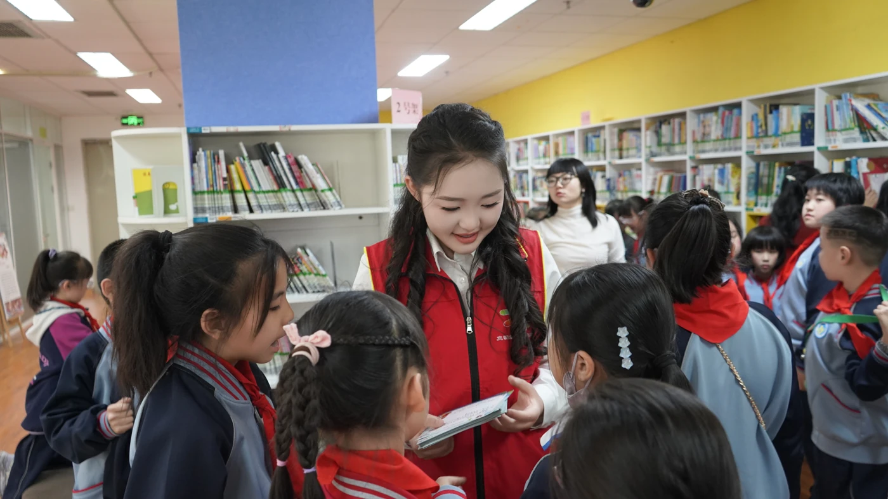

December 2025
Piano & Classical Chinese Poetry
At the Ningxia Library, Herong helped organise a free programme bringing piano performance, poetry and traditional printmaking together.
Video report & archive ↗BEYOND THE STAGE
Music shared in Ningxia.
Free piano education · Yinchuan
Since 2025, Herong has taught free piano lessons at Tongxinyuan Community through the Ningxia Library’s community education programme. Her students include children from migrant-worker families who have limited access to private music lessons.
With a single shared piano, a lesson becomes a group activity. Students learn rhythm, notation and coordination together, taking turns at the instrument while their classmates listen and practise alongside them.
In 2026, Herong arranged 44 concert tickets for her students and their families to hear a live symphonic performance of Grieg’s Piano Concerto. The music they were learning about in class became a shared experience in the concert hall.
Read the community coverage ↗

Teaching photographs, lesson notes and project documents will join this archive.

As Regional Director for Northwest China of the Back to BACH Project, Herong established its Yinchuan chapter and brought together a network of 52 members.
She recruited Germany-based pianist and collaborative artist Yizhuo Meng to provide remote musical mentorship, and invited Leo Wang (Lu Wang), a piano soloist with the Ningxia Performing Arts Group Symphony Orchestra, to participate as a guest artist.
The chapter’s work is presented here as a separate initiative from Herong’s independent teaching at Tongxinyuan Community.
CHAPTER FILM · 21 APRIL 2026
Music, reading and shared activities at the Ningxia Library.
School choir accompaniment, a television interview, founding the BEL Business Club, and hosting a graduation ceremony.
At the Ningxia Library, Herong helped organise a free programme bringing piano performance, poetry and traditional printmaking together.
Video report & archive ↗Herong contributed to an educational programme reaching more than 800 primary-school students across 14 classes.